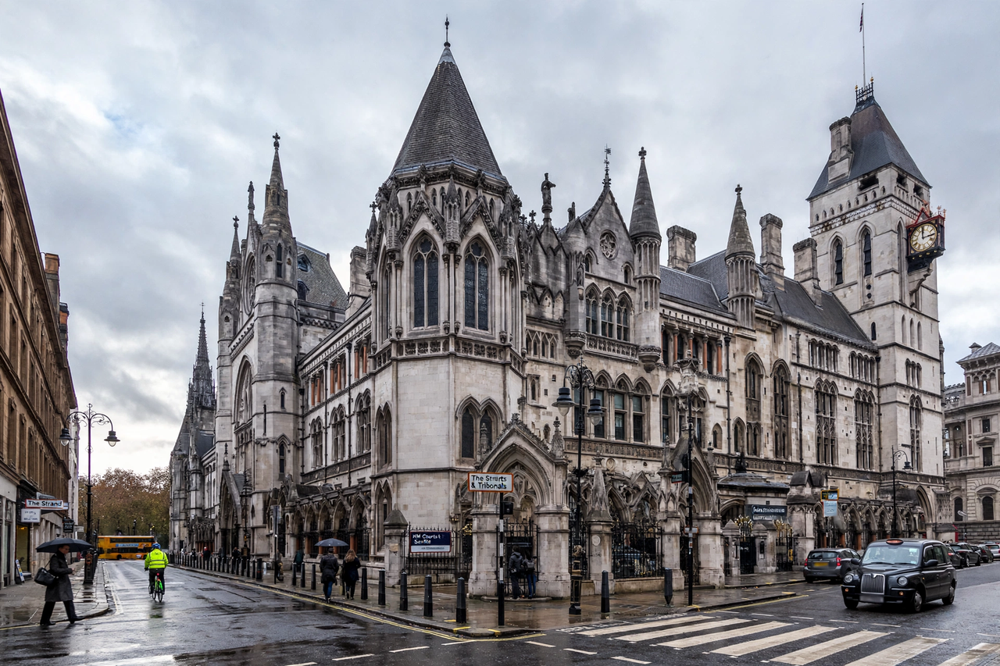

| High Court of Justice | |
|---|---|
 | |
| Established | 1875 (Judicature Acts 1873–1875) |
| Jurisdiction | England and Wales |
| Location | Royal Courts of Justice, Strand, London |
| Divisions | King's Bench, Chancery, Family |
| Appeals to | Court of Appeal |
The High Court of Justice in London, known properly as His Majesty's High Court of Justice in England, is, together with the Court of Appeal and the Crown Court, one of the Senior Courts of England and Wales. It deals primarily with civil cases and judicial review of the actions of public bodies. Its name is abbreviated as EWHC in legal citations.
The High Court was created by the Judicature Acts of 1873–1875, which fused the administration of the common law and equity courts — including the Court of Queen's Bench, the Court of Chancery, the Court of Exchequer, the Court of Common Pleas and others — into a single Supreme Court of Judicature, with the High Court as its court of first instance. The court initially had five divisions; these were consolidated over time into the present three. The High Court is based at the Royal Courts of Justice on the Strand in central London, a Gothic Revival building designed by George Edmund Street and opened in 1882, although judges also sit at district registries in major cities across England and Wales.
The King's Bench Division (Queen's Bench during the reign of a queen) hears contract and tort cases, commercial disputes through the Commercial Court and Admiralty Court, and the Administrative Court, which handles judicial review and certain statutory appeals. It is headed by the President of the King's Bench Division.
The Chancery Division deals with business and property law, including company law, insolvency, trusts, probate, land disputes and intellectual property (through the Patents Court and the Intellectual Property Enterprise Court). It descends from the old Court of Chancery and is headed by the Chancellor of the High Court.
The Family Division hears cases concerning marriage, children, wardship, adoption and the welfare of incapacitated persons. It is headed by the President of the Family Division.
High Court judges are formally styled "The Honourable Mr/Mrs Justice [surname]" and are addressed in court as "My Lord" or "My Lady". They are appointed by the Crown on the recommendation of the Lord Chancellor following selection by the Judicial Appointments Commission. Below the full judges sit deputy High Court judges, masters and district judges, who handle much of the court's interlocutory and procedural work.